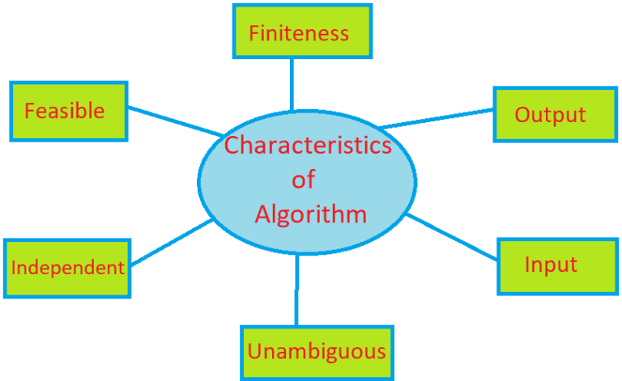

Demonstrate the basic data structure and algorithms
Introduction to Algorithm:
Algorithm
algorithm Interactions ka group hota ha. jeske dura kisi vesha problem ko solve kiya jata ha. in outher words algorithm ek process ha jeske dura programmingme aane bali problem ko solve kiya jata ha. algorithm rule ka collection hota ha. jenka use step by step kisi kam ko pura karne me kiya jata ha. algorithm ko flowchart ka use karke present kiya jata ha. algorithm ka use hum kisi bhi programming language jese ki-C,C++,jav and Python etc me kar sakte ha.
Algorithms are widely used throughout all areas of IT. In mathematics and computer science, an algorithm usually refers to a small procedure that solves a recurrent problem. Algorithms are also used as specifications for performing data processing and play a major role in automated systems.
An algorithm could be used for sorting sets of numbers or for more complicated tasks, like recommending user content on social media. Algorithms typically start with initial input and instructions that describe a specific computation. When the computation is executed, the process produces an output.
Algorithms use an initial input along with a set of instructions. The input is the initial data needed to make decisions and can be represented in the form of numbers or words. The input data gets put through a set of instructions, or computations, which can include arithmetic and decision-making processes. The output is the last step in an algorithm and is normally expressed as more data.
characteristics of Algorithm

1. Unambiguous
2. Input
3. Output
4. Finiteness
5. Feasible
6. Independent
Advantages of Algorithm
- 1. algorithm ko samjhna aasan hota ha.
- 2. yaha kisi problem ko slove karne me help karta ha.
- 3. algorithm ko real program me convert karna aasan hota ha.
- 4. yaha kisi problem ko step by step solve kaeta ha.
- 5. yaha kisi programming language per depend nhi hota ha.
- 6. esme debugging karna aasan hota ha.
Disadvantage of algorithm
- 1. algorithm ko likhna kafi jada time lagta ha.
- 2. bade algorithm bahut complex hote ha.
- 3. esme loop statement jese ki- while loop, for loop etc ko dekhna hard hota ha.